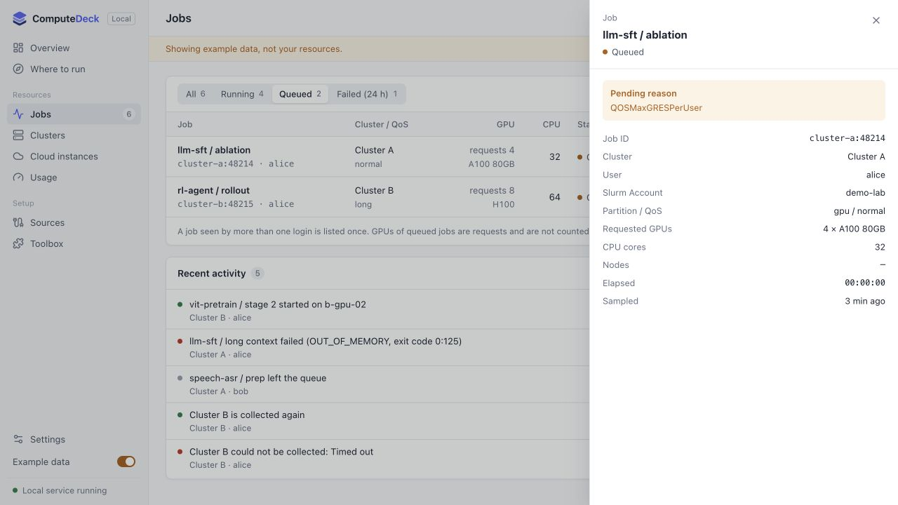
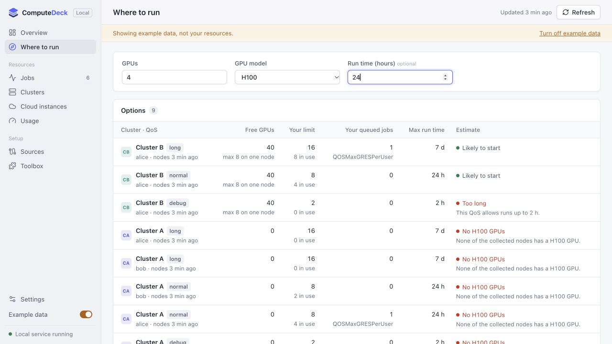

Meet ComputeDeck. See your clusters and cloud GPUs in one place.
Open a queued job to understand the wait. Then choose your GPU
needs and compare capacity, permissions, and time limits.
Read-only by default, with your existing SSH setup. This
walkthrough uses example data.
BUILT AROUND THE QUESTIONS YOU ASK
Less checking. More understanding.
A view of the resources available to you, without a pile of
terminal tabs.
01 / FOLLOW YOUR WORK
What’s running. What’s waiting. Why.
See running, queued and recently failed jobs across cluster
logins. Open a job for its requested GPUs, account, QoS and the
scheduler’s pending reason.
The same job seen through two logins is counted once.

Example: inspect a queued job without leaving the dashboard.
02 / PLAN THE NEXT RUN
Match your next job to visible capacity.
Choose a GPU model, a GPU count and a run time. Compare collected
node capacity, verified QoS access and limits across your cluster
accounts.
An estimate from the last collection. Scheduler priorities and
reservations can still delay a job.

Example: compare a 4 × H100, 24-hour run.
BRING YOUR OWN RESOURCES
One dashboard. Your kind of compute.
Collect on your laptop, or keep collecting on an always-on machine
and connect through an SSH tunnel.
Clusters
Slurm
· Kubernetes · PBS · LSF
Cloud GPUs
RunPod · Lambda · AWS EC2
· Vast.ai
Your machines
GPU hosts over SSH · Manual entries
Make it yours
English & Chinese · Optional tools & plugins
Kubernetes, PBS, LSF and Vast.ai integrations are beta. Available data
depends on the permissions of your account.
RELEASE PREVIEW
A clearer view of your research compute.
ComputeDeck is preparing for its first public release. The source
repositories remain private, and packages are not yet available on
PyPI.
This page is a product preview. The demo runs entirely on fictional
data.